Zinguería
Fabricación e instalación de canaletas, babetas, cumbreras y accesorios para techos.
Consultar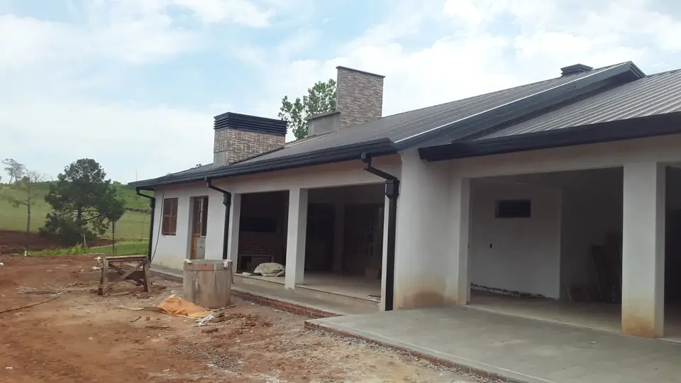
ZINGUERÍA · HERRERÍA · METALURGIA
Fabricación, instalación y reparación de piezas y estructuras pensadas para cada proyecto.
QUÉ HACEMOS
01 — SERVICIOS
Desde una pieza de chapa hasta una estructura o una reparación: cada trabajo se define según lo que necesitás.
Fabricación e instalación de canaletas, babetas, cumbreras y accesorios para techos.
ConsultarFabricación y modificación de rejas, estructuras y trabajos a medida.
ConsultarPlegado, conformado y fabricación de piezas en chapa para distintas aplicaciones.
ConsultarTrabajos industriales y artísticos, además de reparaciones.
ConsultarCapuchones, chimeneas y accesorios para quinchos y hogares.
ConsultarSoluciones personalizadas para particulares y empresas.
ConsultarTRABAJOS Y DETALLES
02 — GALERÍA
Una selección de trabajos y piezas compartidos por HDL.
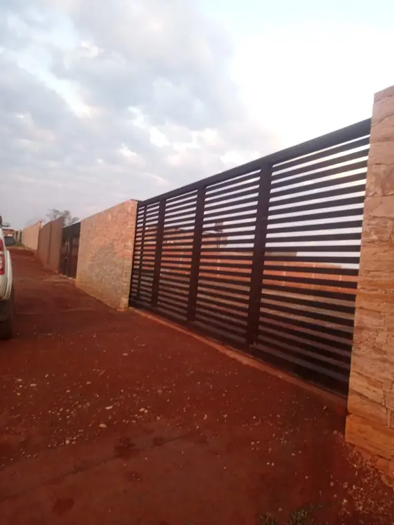
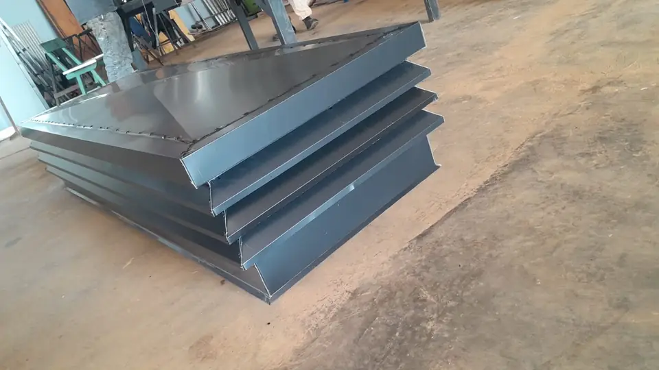
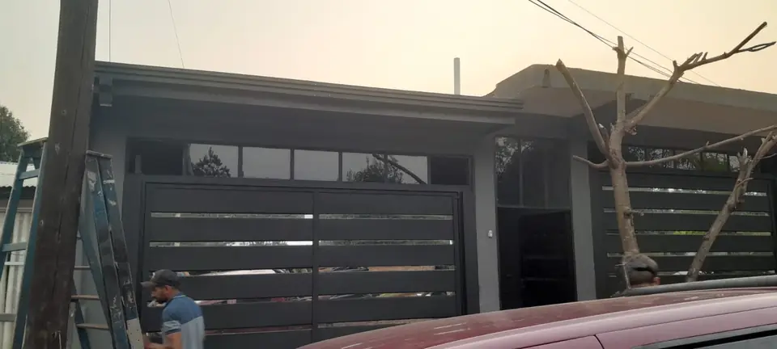
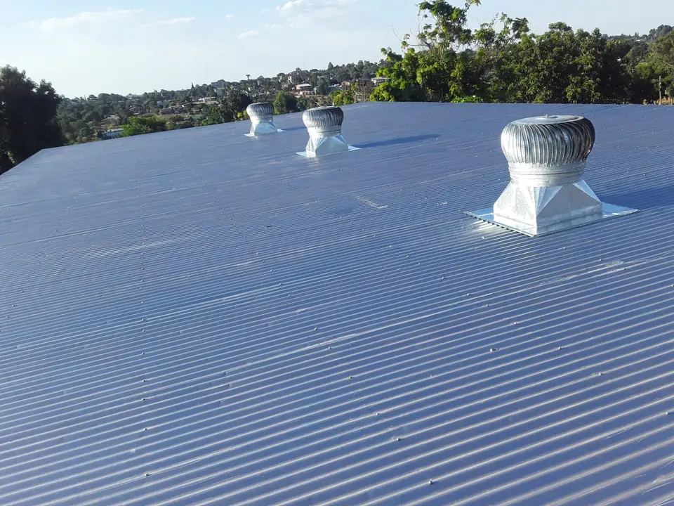
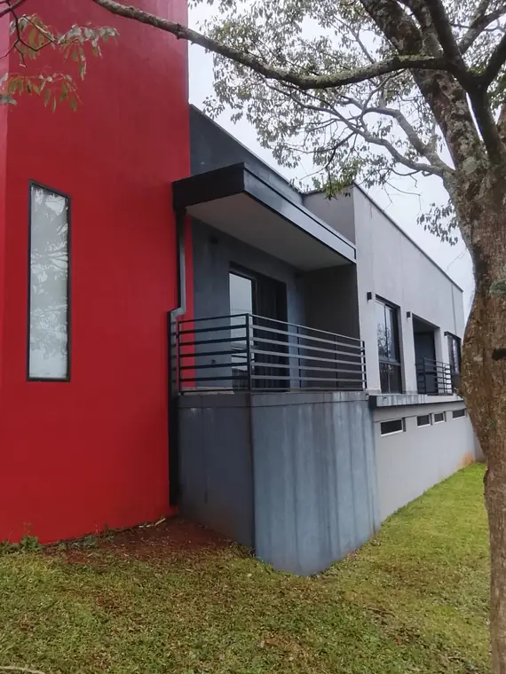
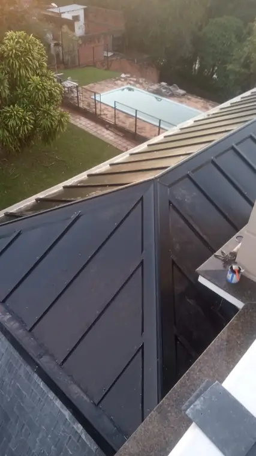
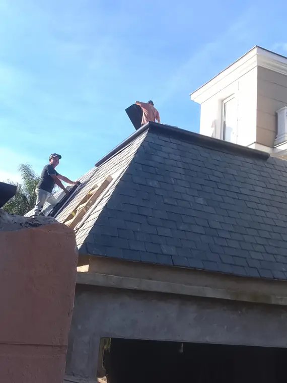
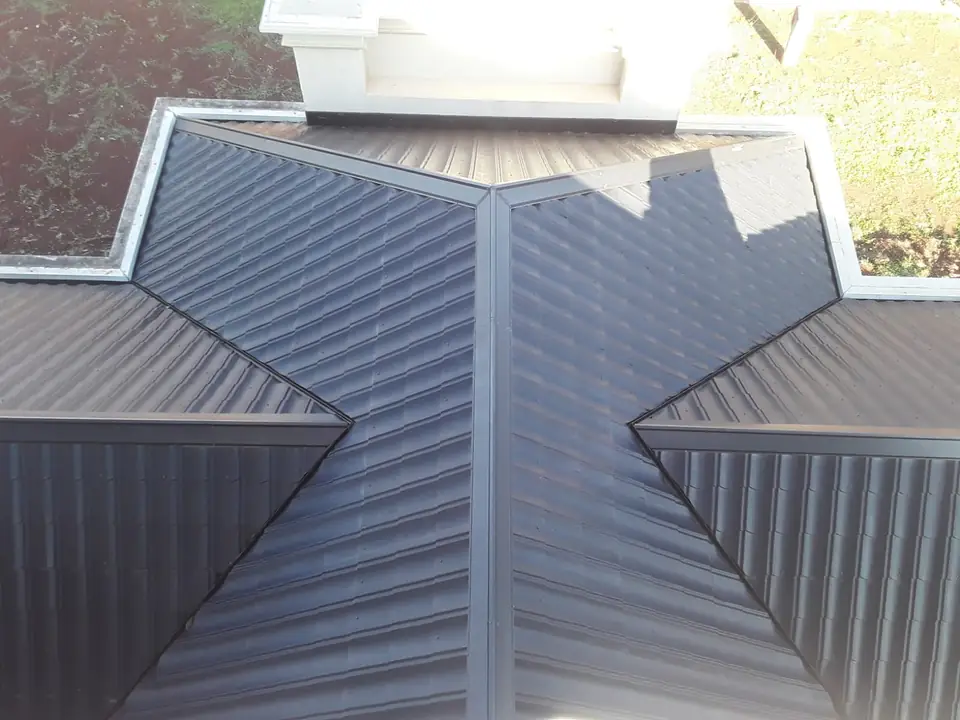
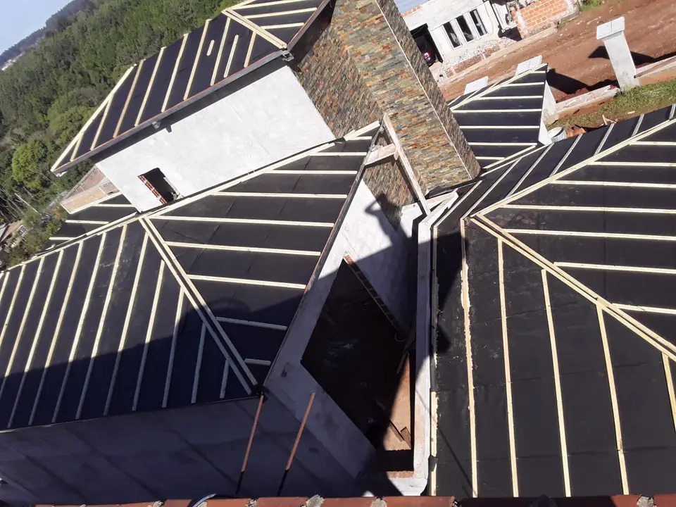
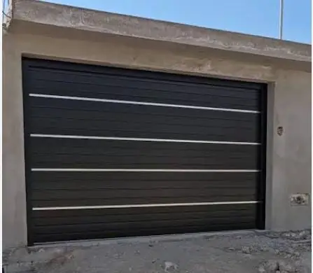
ZINGUERÍA Y METALÚRGICA HDL
HDL reúne zinguería, herrería y metalurgia en un mismo lugar. Fabricación, modificaciones y reparaciones para proyectos de particulares y empresas.
Trabajamos principalmente en Misiones. Contanos qué necesitás y en qué localidad para conversar sobre el trabajo.
Hacer una consultaA MEDIDA
03 — CADA PROYECTO
Compartinos una descripción, medidas aproximadas o fotos del lugar. Con esa información podemos entender mejor el trabajo y conversar los próximos pasos.
Consultar por WhatsAppDescribí el trabajo y la localidad. Si tenés fotos o medidas, también podés compartirlas.
Materiales, medidas y alcance se conversan según las características del proyecto.
Acordamos una propuesta para la fabricación, modificación o reparación que necesitás.
CONTACTO
ATENCIÓN EN MISIONESEscribinos y contanos qué necesitás. Te respondemos para conversar los detalles.